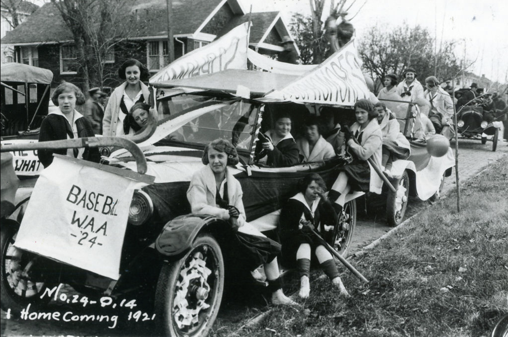

Homecoming over the years
In 1911, Chester Brewer invited MU alumni to come back for the big game against the Kansas Jayhawks. This was Mizzou's first homecoming.
Since then, the tradition has only grown, drawing in more of the community with more events, sorority and fraternity house decorations and a new focus on service projects.
You can read more on the main Missourian website.


Mizzou homecoming float, 1921.